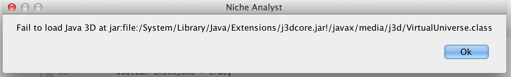

Install NicheA on Mac OS X 10.7+
Note:
In the latest Mac OS X (l Capitan and Sierra), they combined an old Java 3D library (v1.3) by default. NicheA requires Java 3D library v1.6. You needn't install Java 3D library v1.6 because the NicheA installation package contains the required library. But you have to remove the default Java 3D library (v1.3) installed in System/Library/Java/Extensions/
Because of the new feature introduced in El Capitan, System Intregrity Protection (SIP), you can't remove the files in System/Library/Java/Extensions/ directly (even with "sudo"). You need to turn off SIP, so that you can remove the j3d_xxxx.jar in /System/Library/Java/Extensions/
You can temporarily disable SIP and remove the Java 3D library (v1.3) with the following way
- reboot
- as soon as you hear the "Mac sound" on the grey screen, press Cmd+R to enter Recovery mode
- Open Utilities->Terminal
- Run the command csrutil disable
- Reboot, you'll land in the normal OS with SIP disabled
- Remove j3d*.jar, vecmath.jar in folder "/System/Library/Java/Extensions/"
- Reboot again
- as soon as you hear the "Mac sound" on the grey screen, press Cmd+R to enter Recovery mode
- Enable SIP with csrutil enable
- Reboot again
- done
1. Install GDAL Component (Download)
This is a convenience installer that includes all the current versions of the GDAL, GEOS, PROJ, SQLite and UnixImageIO frameworks below. There is no need to download and install these frameworks individually if this package is installed. The GDAL plugins and other extras are not included, but the numPy package is.
2. Install PCRE v8.36 - Perl Compatible Regular Expressions
GDAL need PCRE to be installed to /usr/local/lib folder. If you have installed XCODE and gcc, you can compile and install PCRE from source code. We compiled it on Mac OS X 10.9. It works well on Mac OS X 10.8 and 10.9. After downloading the compiled PCRE, you can execute the following commands to copy PCRE to a right place.
The commands to install PCRE. Assuming you have downloaded and upzipped PCRE.
>sudo mkdir /usr/local/lib
3. Install R
You can following this page to install R to your computer. Then you need to install the following packages with the following commands.
> install.packages("ggplot2")
> install.packages("raster")
> install.packages("rgdal")
4. Install ImageMagick. (Download)
5. Download and run NicheA. (Download)
Generally, you can run NicheA via double clicking after unzipping it. You can also copy it to your /Applications folder.
If you can't see NicheA's GUI, you can run NicheA via a command to get more informations, or contact huijieqiao@gmail.com to get help.
Output:
Current version v3.0 5.2.2015
Operating system is Mac OS X
Operating system local is en_US
Set Operating system local to en
Java version is 1.8.0_25
Java class path is .
Java library path is .
Java ext path is .
GDAL Native Library loaded.
GDAL version: 1.11.2
jar:file:/Users/huijieqiao/Documents/NicheA.app/Contents/Java/j3dcore.jar!/javax/media/j3d/VirtualUniverse.class
3D [dev] 1.6.0-pre11-daily-experimental daily
Java3D version : 1.6.0-pre11-daily-experimental daily
Java3D vendor :
Java3D renderer: OpenGL
Find gdal_translate at /Library/Frameworks/GDAL.framework/Programs/gdal_translate
Find gdalwarp at /Library/Frameworks/GDAL.framework/Programs/gdalwarp
Find ImageMagick at /opt/ImageMagick/bin/convert
Find RScript at /usr/bin/rscript
6. Check Java 3D
NicheA uses Java 3D 1.6.0, but some Mac OS X release version contains an old version Java 3D (1.3 or 1.5), which may cause NicheA to crash. The dialog in Fig.1 means that NicheA loads an incorrect J3D library. A solution is removing the old version Java 3D with the following commands.
> sudo mkdir java3d_bak
> sudo mv j3d* java3d_bak/
> sudo mv libJ3D* java3d_bak/
